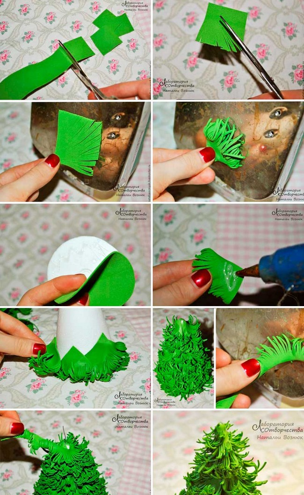

.jpg)
Ёлочные украшения
Ёлочные украшения — шары, фигурки и иные украшения, которыми наряжают новогоднюю (или рождественскую) ёлку, а также интерьер и экстерьер помещения к празднику Рождества и Нового года.
Основные этапы истории ёлочных украшений
Наряженные ёлки как домашний атрибут Рождества появляются в первой половине XVII века в Германии и в Прибалтике. Первые украшения были достаточно просты и следовали христианской символике: навершием служила Вифлеемская звезда, на ветках развешивались яблоки как символ плодов с древа познания Добра и Зла, укреплялись и зажигались свечи как символы ангельской чистоты. По мере становления традиции как предназначенной и для детей украшения усложнялись, на ёлку стали вешать искусственные украшения, сладости и орехи. По одному из преданий, первые стеклянные ёлочные игрушки появились в Саксонии в XVI веке, то есть даже ранее первой документированной установки рождественского дерева. Другое предание связывает их появление с неурожаем яблок в Германии в 1848 году. Тогда стеклодувы в местечке Лауша в Тюрингии наделали взамен стеклянных «яблок» и с успехом их распродали, что положило начало регулярному производству украшений к празднику. Затем уже их начали выдувать и в Саксонии. Трудно судить, насколько легендарны эти сведения и насколько они связаны с соперничеством стеклодувов из разных краёв. Остаётся фактом, что с середины XIX века стеклодувное производство в Лауше остаётся одним из старейших производств стеклянных ёлочных украшений. В 1867 году там был открыт большой газовый завод, ремесленники которого, пользуясь легко регулируемыми газовыми горелками с высокотемпературным пламенем, выдували уже большие тонкостенные шары. В 1903 году в Лауше был открыт Музей художественного стекла, в котором, в частности, представлена коллекция ёлочных украшений. Традиция украшать ёлку горящими восковыми свечами потенциально пожароопасна, но люди шли на этот риск ради следования традиции и ради «естественности» украшений. Идея использовать более безопасные электрические гирлянды пришла в конце 1870-х годов к американскому телеграфисту Ральфу Моррису из Новой Англии. Нити маленьких сигнальных электрических лампочек уже использовались на телефонных пультах, однако Моррис первым догадался развесить их на ёлке. Идея была оценена его коллегами, а затем подхвачена производителями. В 1895 году в США была изготовлена первая уличная новогодняя электрическая гирлянда, которая украсила ель перед Белым домом.
Пошаговая инструкция как сделать ёлочку

г.Гомель
автор:Федоракова Полина
Зделано для IT академии
Реклама отсуствует